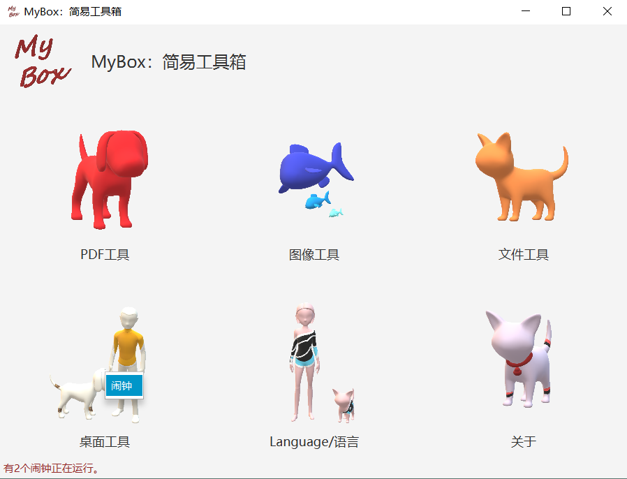
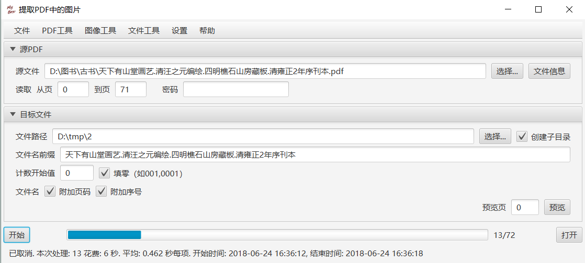
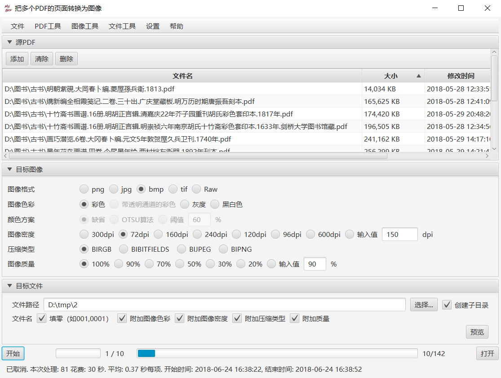
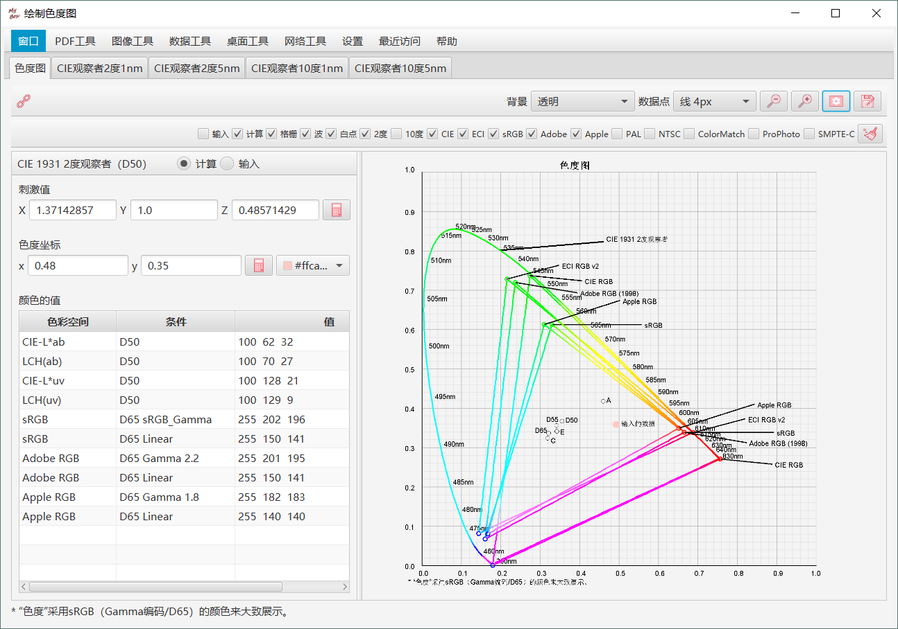
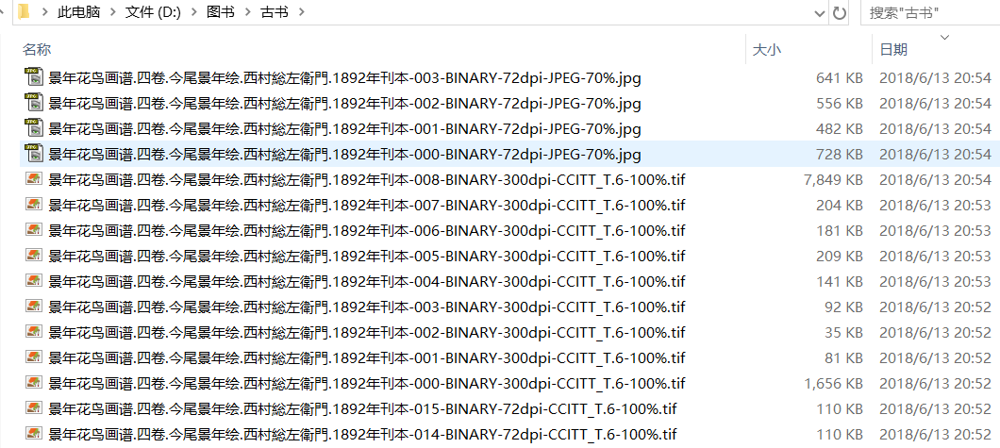
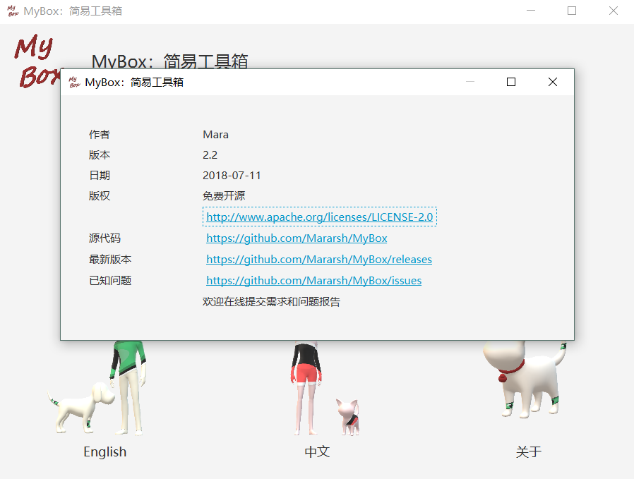
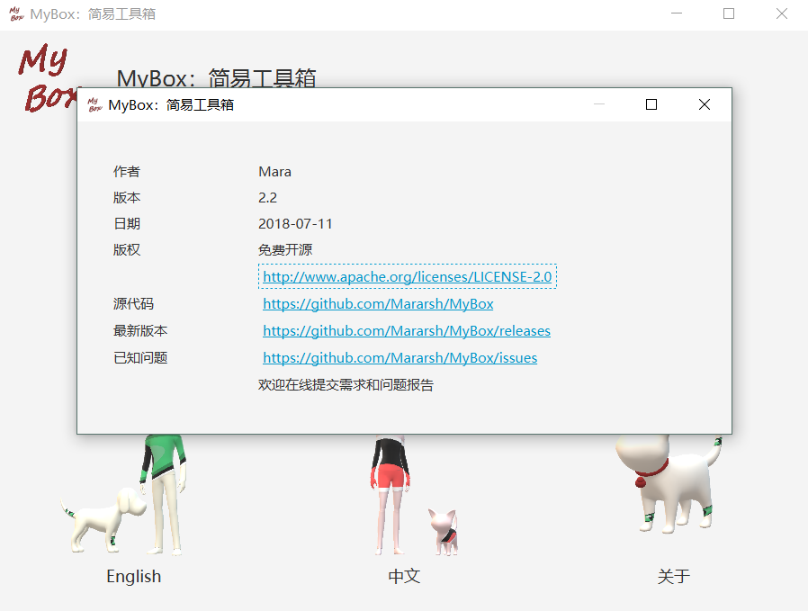

MyBox: Set of Easy Tools
This is a desktop program based on JavaFx, and its target to provide simple and easy functions.
Current version is 1.4. It includes the functions:
1) Convert each page of PDF file to an image with options of format, density, color, compression, quality, and color conversion. And user can pause/continue the conversion.
2) View image and its meta data in format of png, jpg, bmp, tiff.
The following link is the complied Jar:
Under enrionment of JRE or JDK installed, run following command to launch this program:
java -jar MyBox-1.4.jarDevelopment Logs
2018-06-21 v1.4 Support reading/writing meta-data of images in format of png, jpg, bmp, tiff.
2018-06-15 v1.3 Fix the gray calculation in OTSU; Optimize shared codes; Support PDF password; More friendly interface .
2018-06-14 v1.2 Add options of color conversion for binary image type. Save user's choices. And optimize reading of hellp document. Thanks helps from "https://shuge.org/” who asked the requirement of binary conversion of color with threshold.
2018-06-13 v1.1 Add: image format TIFF and RAW, options of Compression Type and Quality, and Help information. Thanks helps from "https://shuge.org/” who asked the requirement of TIFF format
2018-06-12 v1.0 Convert each page of PDF file to an image with options of format, density, color, compression, and quality. And user can pause/continue the conversion.
Snapshots of this program
     
